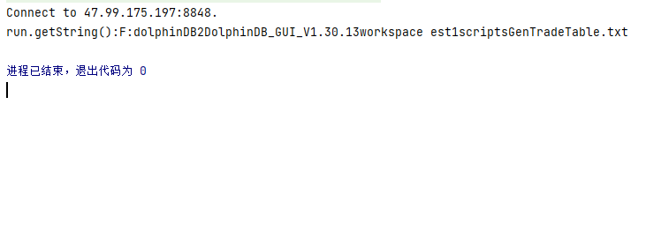

运行时可能出现的问题及解决方法
打包问题1
- 问题描述： Java API 源码环境下，使用 Maven 打包报错：编码 GBK 的不可映射字符。
- 原因分析： MAVEN 安装后默认使用系统编码 GBK，导致在编译 UTF-8格式的源代码文件时出现编码不匹配的问题。
- 解决思路：
修改 pom 文件，添加：
<build>
<plugins>
<plugin>
<groupId>org.apache.maven.plugins</groupId>
<artifactId>maven-compiler-plugin</artifactId>
<configuration>
<source>1.8</source>
<target>1.8</target>
<encoding>UTF-8</encoding>
</configuration>
</plugin>
</build>或者添加：
<properties> <project.build.sourceEncoding>UTF-8</project.build.sourceEncoding> <project.reporting.outputEncoding>UTF-8</project.reporting.outputEncoding> <maven.compiler.encoding>UTF-8</maven.compiler.encoding> </properties>
打包问题2
- 问题描述： Java API 通过 Maven 打包后，提示找不到 LZ4主类，
NoClassDefFoundError:net/jpountz/lz4... - 原因分析： Maven 打包时没有包含第三方依赖包。
- 解决思路：
- 运行 jar 包时，将 Java API 源码下的 lib 文件的 jar 文件引入。（冒号分隔多个依赖，以1.0.27-SNAPSHOT 版本为例）
java -cp ".:./api-java-1.0.27-SNAPSHOT.jar:./lz4-java-1.7.1.jar" ...- 使用 mvn assembly 插件打包。
首先修改 pom 文件。
<plugin>
<artifactId>maven-assembly-plugin</artifactId>
<configuration>
<appendAssemblyId>false</appendAssemblyId>
<descriptorRefs>
<descriptorRef>jar-with-dependencies</descriptorRef>
</descriptorRefs>
<archive>
<manifest>
<mainClass>com.xxdb.MTW_ParThread_Test.Main</mainClass>
</manifest>
</archive>
</configuration>
<executions>
<execution>
<id>make-assembly</id>
<phase>package</phase>
<goals>
<goal>assembly</goal>
</goals>
</execution>
</executions>
</plugin>然后使用如下命令打包。
mvn assembly:assembly clean install
导入了错误的包
- 报错：
no instance of type variable exist so that BasicIntVector conforms to Vector inference...
- 原因分析： 在 Vector 导入时，需要导入 API 提供的 Vector 接口。
- 解决思路： 导入 com.xxdb.data.Vector 包。
转义错误
- 代码：
sqlFormat = "select * from pt where date(%s) = %s,SecurityID like '600%'";
conn.run(String.format(sqlFormat,arg));- 异常：
java.util.UnknownFormatConversionException: Conversion = ''' at java.util.Formatter.checkText(Formatter.java:2579) at java.util.Formatter.parse(Formatter.java:2565) at java.util.Formatter.format(Formatter.java:2501) at java.util.Formatter.format(Formatter.java:2455) at java.lang.String.format(String.java:2940) at com.wyn.read.QueryThread.run(QueryThread.java:104) at java.lang.Thread.run(Thread.java:748)
- 原因分析： Java 中的 String.format 中是以百分号"%"作为占位符来实现格式化，此处 select 语句中 like 模糊查询要配合百分号使用，因此"%"被程序解析为了占位符。
- 解决思路： 使用 “%%” 实现对 “%” 的转义：
sqlFormat = "select * from pt where date(%s) = %s,SecurityID like '600%%'";BasicTable 转化问题
- 问题描述： Java API 如何将带有 array vector 类型的 BasicTable 对象转为 MultiThreadedTableWriter::insert 能接受的格式？
- 代码：
BasicTable data; MultithreadedTableWriter mtwWriter = new MultithreadedTableWriter(/*...... params*/); for (int rowIdx = 0; rowIdx < data.rows(); rowIdx++) { List<Object> row = new ArrayList<>(); for (int k = 0; k < data.columns(); k++) { Vector col = data.getColumn(k); row.add(col.get(rowIdx)); } mtwWriter.insert(row.toArray()); }
- 报错：
java.lang.RuntimeException: Failed to insert data. Cannot convert Entity to DT_DOUBLE_ARRAY. at com.xxdb.data.BasicEntityFactory.createScalar
- 解决思路：
- 先将列转化为 BasicArrayVector。
- 然后调用 getVectorValue 取得该列第 rowIdx 行的数据。
- 再转换 Entity[]，才能转换为 MultithreadedTableWriter::insert 能识别的格式。
for (int rowIdx = 0; rowIdx < data.rows(); rowIdx++) { List<Object> row = new ArrayList<>(); for (int k = 0; k < data.columns(); k++) { Vector col = data.getColumn(k); if (col instanceof BasicArrayVector) { Vector vecVal = ((BasicArrayVector) col).getVectorValue(rowIdx); Entity[] vecValRes = new Entity[vecVal.rows()]; for (int vecValidx = 0; vecValidx < vecVal.rows(); vecValidx++) { vecValRes[vecValidx] = vecVal.get(vecValidx); } row.add(vecValRes); } else { row.add(col.get(rowIdx)); } } mtwWriter.insert(row.toArray()); }
运行结果与 GUI 不一致
- 问题描述： Java API 执行 run 函数和 GUI 中执行结果不一致。
API 代码：
conn.login("admin","123456",false); StringBuilder sb = new StringBuilder(); sb.append("'") .append("F:"+File.separator+"dolphinDB2"+File.separator+"DolphinDB_GUI_V1.30.13"+File.separator+"workspace"+File.separator+"test1"+File.separator+"scripts"+File.separator+"GenTradeTable.txt") .append("'") ; Entity run = conn.run(sb.toString()); System.out.println("run.getString():"+run.getString());
GUI 脚本：
n=2000
syms=`YHOO`GE`MS`MSFT`JPM`ORCL`CISCO
timestamp=09:30:00+rand(18000, n)
sym=rand(syms, n)
qty=100*(1+rand(100,n))
price=5.0+rand(100.0, n)
t1=table(timestamp,sym,qty,price);
t1在 GUI 中可以看到结果如下：
Java API 执行结果如下：

- 原因分析： Java API 的 run 方法的参数是字符串形式的脚本，和 server 的 run 函数不同。
- 解决思路： 在 API 的 run 方法中执行 server 的 run 方法**，**如下代码才是运行一个文件中的脚本。
DBConnection conn = new DBConnection(); conn.connect("localhost",8848,"admin","123456"); StringBuilder sb = new StringBuilder(); String script = "run(\"D:/work/GenTradeTable.txt\")"; System.out.println(script); BasicTable res = (BasicTable) conn.run(script); System.out.println("run.getString():"+res.getString());